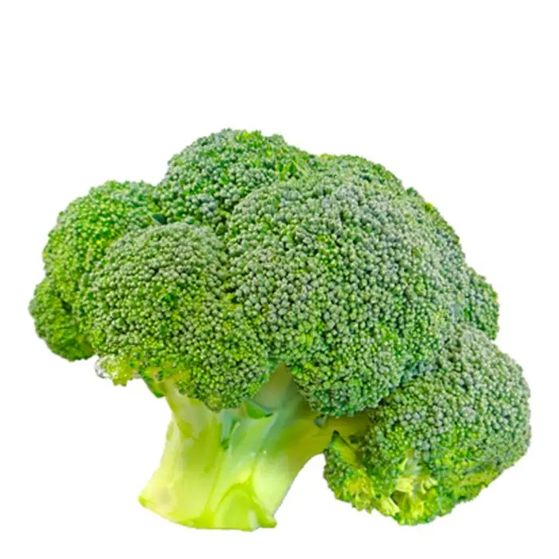
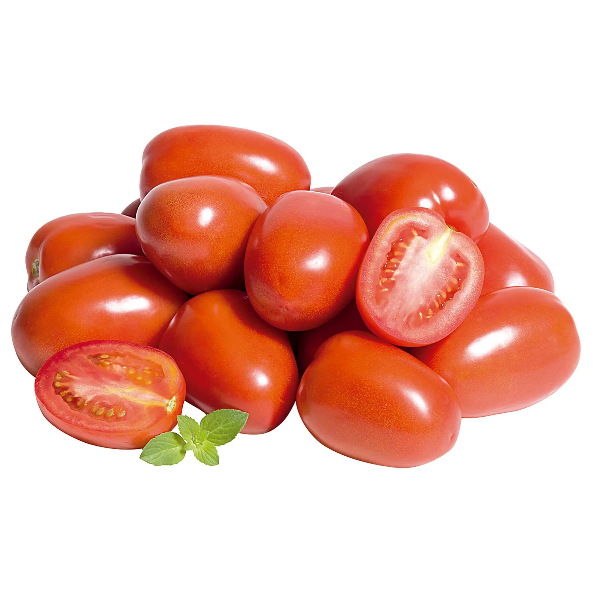
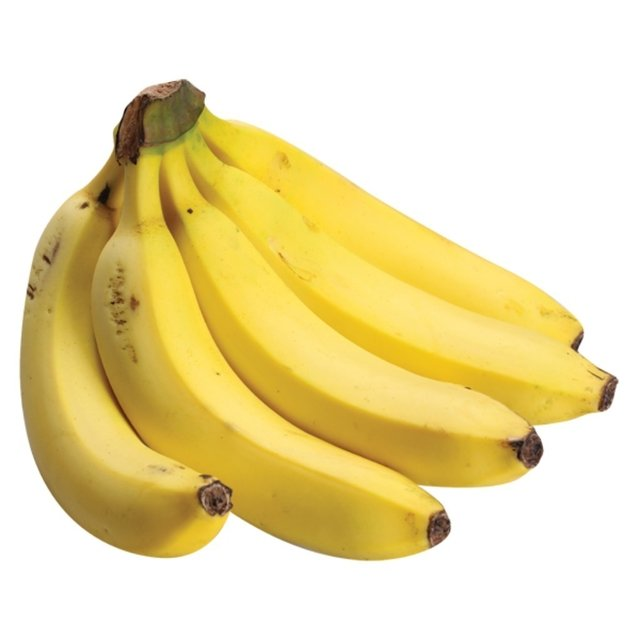
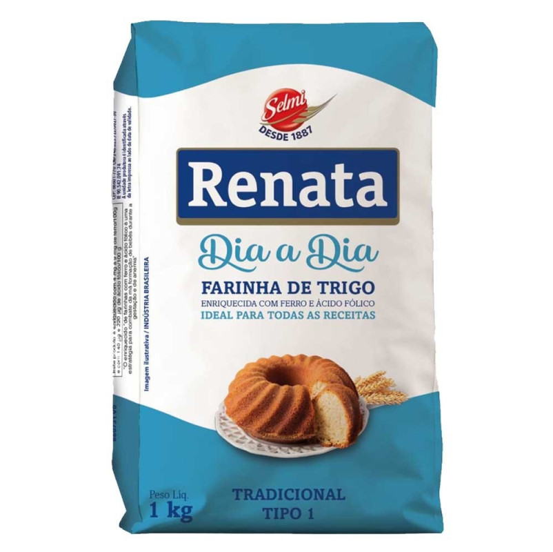
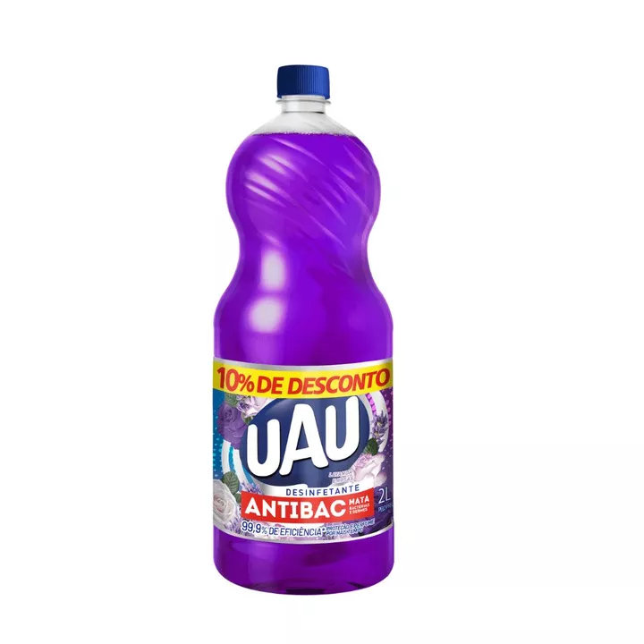
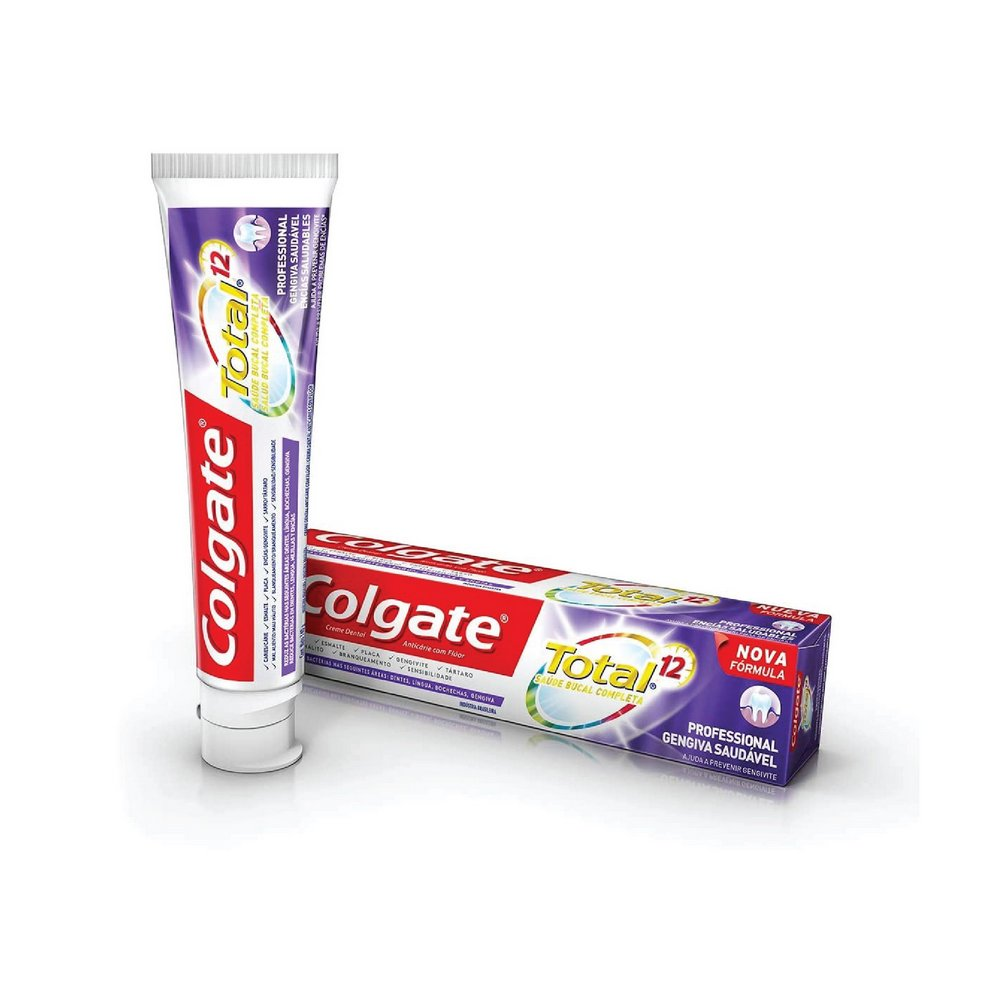

Nossos Produtos
Frutas e Verduras
Brócolis Unidade
Descrição:Brócolis comum é uma hortaliça rica em ferro contém vitaminas A, B, C e K, e ainda é uma boa fonte de cálcio. Pode ser preparado cozido no vapor, refogado, gratinado, em pizzas ou ainda como recheio de pães e tortas.
Valor: R$12,00
Tomate KG
Descrição:Produto ideal para saladas, porém pode ser utilizado em molhos.
Valor: R$15,00
Banana KG
Descrição:A Banana prata é uma das fruta mais popular do Brasil, com alto valor nutritivo. Por ser rica em potássio, é muito consumida por quem pratica atividades físicas, para prevenir cãibras e fornecer muita energia.
Valor: R$5,00
Produtos alimentícios não perecíveis
Arroz 5KG

Descrição:Sempre soltinho, mais nutritivo e saboroso, não precisa escolher nem lavar.
Valor: R$30,00
Farinha de Trigo KG
Descrição:Amplamente aplicada em receitas de pães, bolos, tortas, salgados, panquecas e massas.Contém GLÚTEN
Valor: R$7,00
Produtos de higiene e limpeza
Desinfetante
Descrição:Uma solução eficiente e prática para manter o seu ambiente limpo e livre de germes e bactérias.Com fragrância de lavanda, esse desinfetante oferece uma limpeza profunda,além de deixar um aroma agradável no ar.
Valor: R$12,00
Pasta de dente
Descrição:Novo creme dental Colgate Total 12 Gengiva Reforçada, com fórmula avançada e antibacteriana,garante até 12 horas de defesa ativa que reforça sua gengiva contras as bactérias com o uso contínuo.
Valor: R$12,50
Serviços
Tele-Entrega
Valor: R$10,00
Retirada no local
Valor: R$0,00